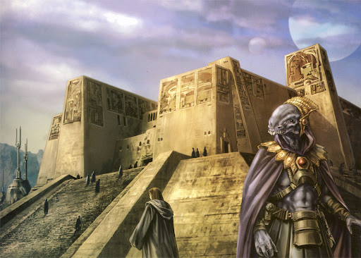

Opis: Planeta Obroa-skai była domem dla największej biblioteki i centrum wiedzy w galaktyce. Zbudowana tysiące lat przed wojnami klonów, biblioteka gromadziła dane na temat wszystkich znanych cywilizacji, technologii, map galaktycznych oraz zapisów historycznych. Była to neutralna placówka, dostępna zarówno dla Jedi, jak i niezależnych uczonych z całej galaktyki.
Wnętrze biblioteki charakteryzowało się monumentalnymi salami pełnymi danych zapisanych w holokronach i starożytnych, fizycznych księgach. Niestety, podczas inwazji Yuuzhan Vongów biblioteka została zniszczona, a jej bezcenne zbiory przepadły na zawsze.
Znaczenie: Biblioteka na Obroa-skai jest symbolem dążenia galaktyki do poznania i zachowania wiedzy. Jej zniszczenie było ogromną stratą dla całej cywilizacji, przypominającą, jak kruchy może być postęp w obliczu konfliktu.
 ➡